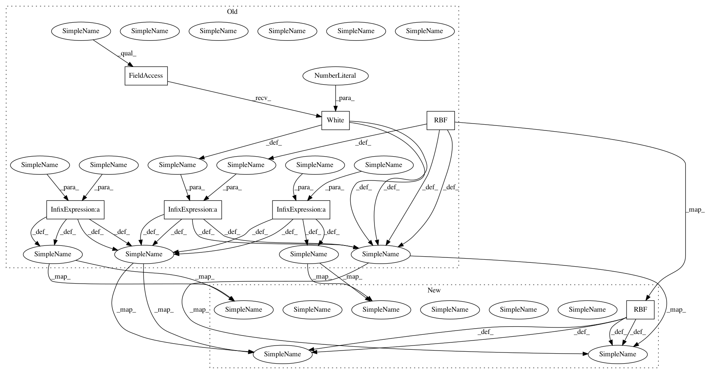

853a8c984cac59a56fcf66dcbfe4358246344f55,testing/test_method_equivalence.py,TestEquivalence,setUp,#TestEquivalence#,20
Before Change
m1 = GPflow.gpr.GPR(X, Y, kern=GPflow.kernels.RBF(1))
m2 = GPflow.vgp.VGP(X, Y, GPflow.kernels.RBF(1), likelihood=GPflow.likelihoods.Gaussian())
m3 = GPflow.svgp.SVGP(X, Y, GPflow.kernels.RBF(1)+GPflow.kernels.White(1),
likelihood=GPflow.likelihoods.Gaussian(),
Z=X.copy(), q_diag=False)
m3.Z.fixed = True
m4 = GPflow.svgp.SVGP(X, Y, GPflow.kernels.RBF(1)+GPflow.kernels.White(1),
likelihood=GPflow.likelihoods.Gaussian(),
Z=X.copy(), q_diag=False, whiten=True)
m4.Z.fixed=True
m5 = GPflow.sgpr.SGPR(X, Y, GPflow.kernels.RBF(1)+GPflow.kernels.White(1), Z=X.copy())
m5.Z.fixed = True
self.models = [m1, m2, m3, m4, m5]
for m in self.models:
After Change
m1 = GPflow.gpr.GPR(X, Y, kern=GPflow.kernels.RBF(1))
m2 = GPflow.vgp.VGP(X, Y, GPflow.kernels.RBF(1), likelihood=GPflow.likelihoods.Gaussian())
m3 = GPflow.svgp.SVGP(X, Y, GPflow.kernels.RBF(1),
likelihood=GPflow.likelihoods.Gaussian(),
Z=X.copy(), q_diag=False)
m3.Z.fixed = True
m4 = GPflow.svgp.SVGP(X, Y, GPflow.kernels.RBF(1),
likelihood=GPflow.likelihoods.Gaussian(),
Z=X.copy(), q_diag=False, whiten=True)
m4.Z.fixed=True
m5 = GPflow.sgpr.SGPR(X, Y, GPflow.kernels.RBF(1),
Z=X.copy())
m5.Z.fixed = True
self.models = [m1, m2, m3, m4, m5]
In pattern: SUPERPATTERN
Frequency: 3
Non-data size: 7
Instances
Project Name: GPflow/GPflow
Commit Name: 853a8c984cac59a56fcf66dcbfe4358246344f55
Time: 2016-04-12
Author: james.hensman@gmail.com
File Name: testing/test_method_equivalence.py
Class Name: TestEquivalence
Method Name: setUp